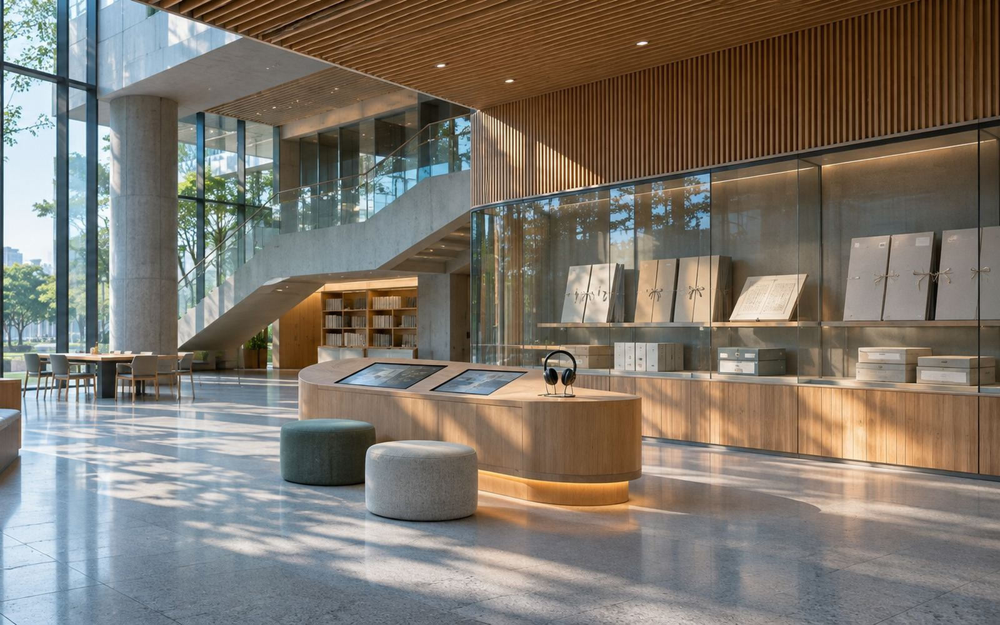
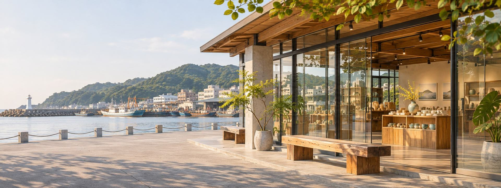
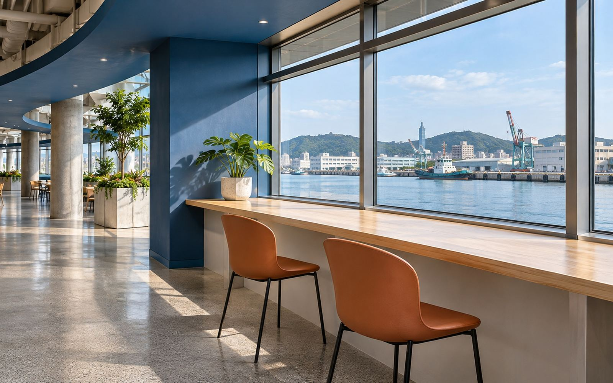
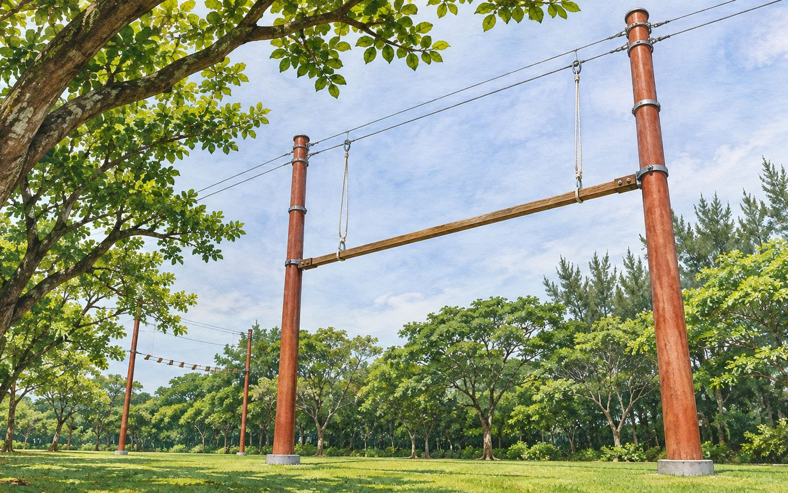
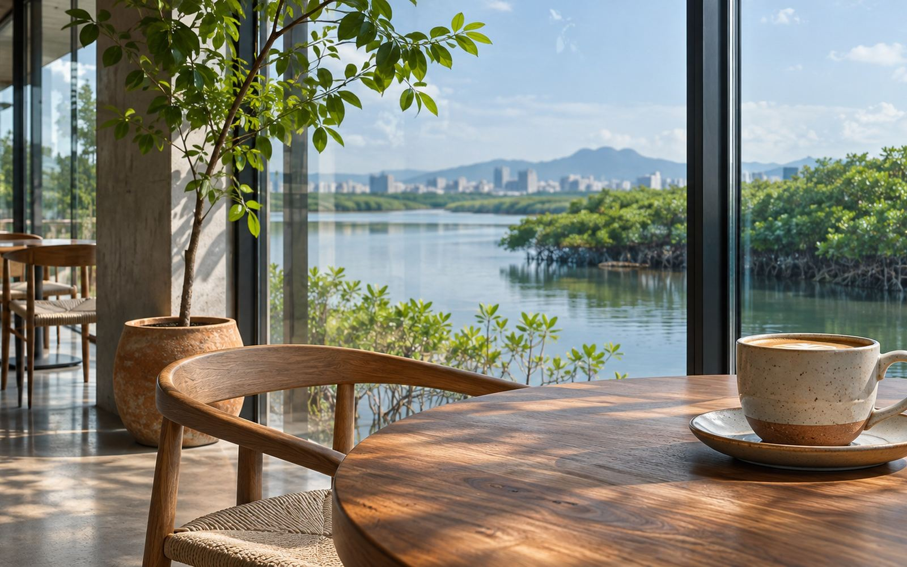

場域意象商業空間＋停車場
國家檔案館
新北市林口區檔案館路 1 號
國家檔案館的附屬商業空間與停車場由大日招商經營：館內文創商店與 WALK IN 咖啡，讓參觀檔案展覽的民眾可以逛、可以坐下來喝杯咖啡。
- 館內文創商店
- WALK IN 咖啡
- 地下停車場

多元化經營
把停車場經營的經驗延伸到商業空間、餐飲與休閒遊憩，讓到訪者從停好車開始，就有完整的體驗。

場域意象商業空間＋停車場
新北市林口區檔案館路 1 號
國家檔案館的附屬商業空間與停車場由大日招商經營：館內文創商店與 WALK IN 咖啡，讓參觀檔案展覽的民眾可以逛、可以坐下來喝杯咖啡。

依實景參考繪製商業空間＋停車場
基隆市中正區中正路 3 號 1、2 樓
基隆港東岸旅客服務中心 1、2 樓的商業空間「叁肆行」由大日招商經營，總面積約 3,650 坪。好食城集結臺灣小吃、異國料理與人氣餐廳，另有藥局與伴手禮店，座位面向基隆港與郵輪。
餐飲・咖啡
藥妝・選物
依基隆市政府觀光旅遊網公開資料整理（2026 年 11 月查詢），實際營業以商場及各店公告為準。 基隆港好食城店家資訊

場域意象體驗學習・休閒遊憩
桃園市新屋區新港路 16 號
以繩索挑戰、團隊課程與水上活動為主的戶外體驗學習基地，可辦理學校、企業與親子團體活動。園區增建營運移轉案獲 110 年度財政部金擘獎優等。

場域意象水岸遊憩＋餐飲
舟日咖啡：桃園市新屋區永安里新港路 166 號
新屋後湖溪的水岸園區，由大日經營園區水域活動與園區咖啡。舟日咖啡以大片玻璃窗面向河口與紅樹林，玩水之後可以坐下來休息。
 依實景參考繪製
依實景參考繪製觀光遊憩
八斗子月台：新北市瑞芳區建基路二段 121 號
由舊運煤鐵道改建，全長約 1.3 公里，往返八斗子與深澳，沿線可見海景與昔日礦業遺跡。
合作模式
PARKING
BEYOND PARKING